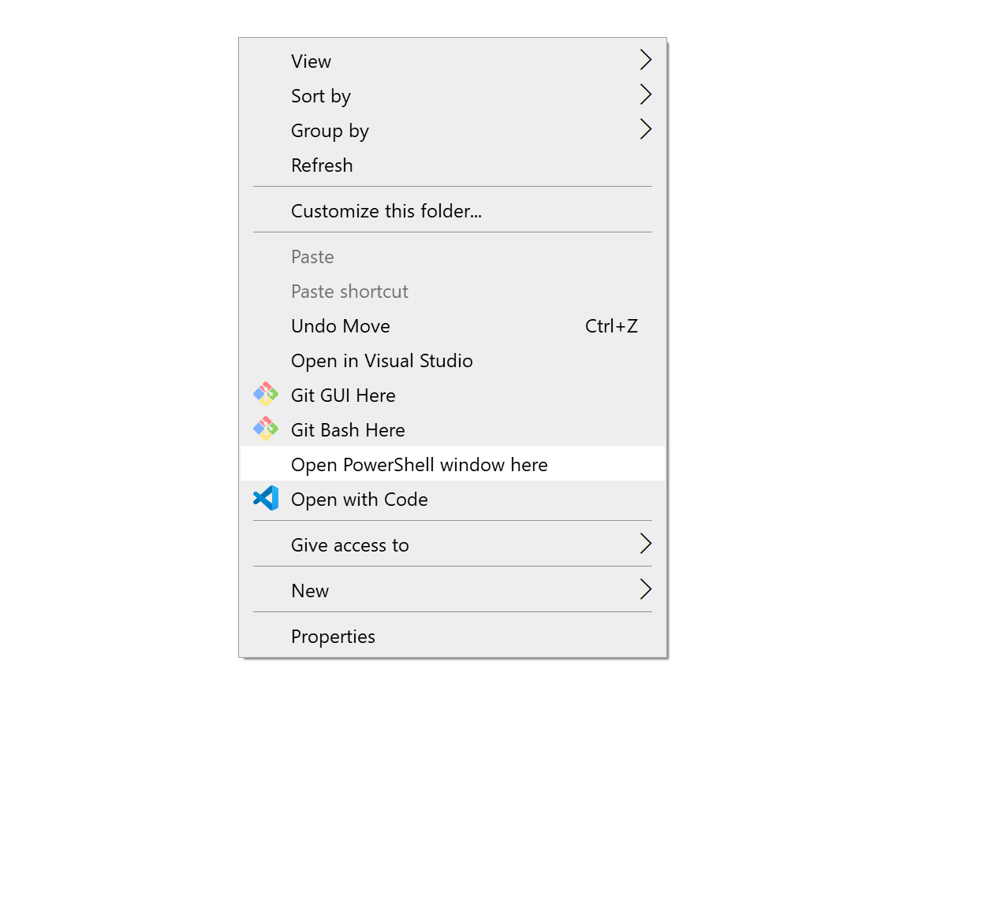
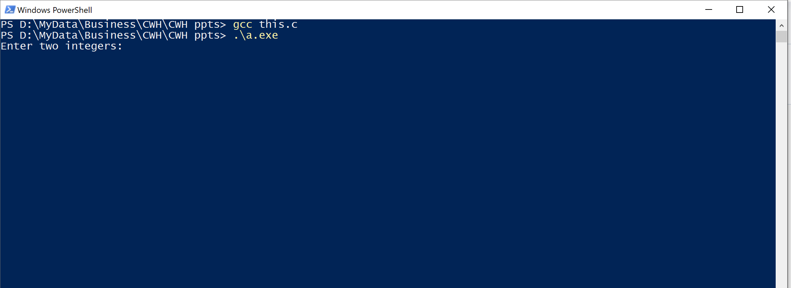

One of my friends asked me how to solve this error:
gcc.exe: error: this.c: No such file or directory gcc.exe: fatal error: no input files compilation terminated.
This error is pretty much saying that you have the gcc compiler installed and working on your computer, but you don't have any file named this.c on this directory.
The presence of this error essentially means that you are in the wrong directory or you are misspelling your filename.
To get into the correct directory, all we need to do is use the cd command. Alternatively, you can navigate through windows explorer to get into the correct directory by following the steps below:
Step 1: Go to the location of the file you want to compile using gcc and press shift and right-click at the same time.
You will now be offered a navigation menu like this:
Step 2: Click on the "Open PowerShell window here" or "Open in Terminal" option, and you will find the PowerShell/Terminal window opened inside that directory
Step 3: Type gcc <filename.c>
Since my filename is this.c I will type:
gcc this.c
Step 4: Type a.exe to execute your compiled program. Your program will compile and run, as shown below:
Hence we saw that solving the "No such file or directory" error in GCC doesn't have to be a perplexing task. As we've seen, it's often a simple matter of navigating to the correct directory or ensuring the correct spelling of the file name.
With these easy-to-follow steps, you'll be back to coding in no time. I hope this post solved your issue. Let me know how the problem in your case occurred in the comments below. Happy coding!